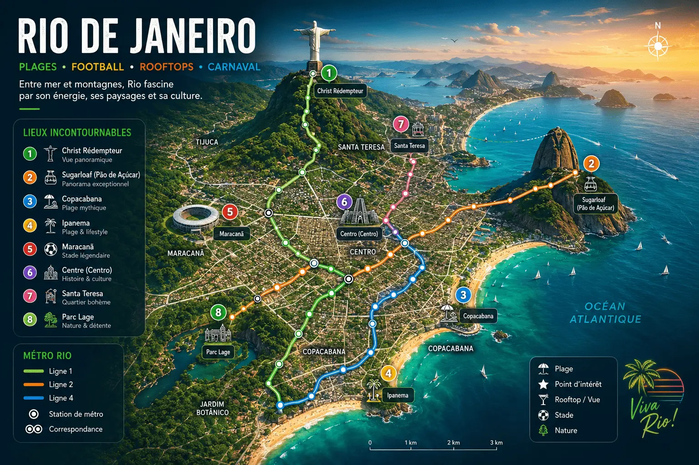

Rio transforme chaque coucher de soleil en spectacle
Explore Rio entre plages iconiques, football brésilien, Carnaval, rooftops, montagnes et ambiance tropicale unique.
Copacabana • Ipanema • Carnaval • Football • Christ Rédempteur
Copacabana et Ipanema offrent une ambiance unique au monde.
Découvre l’ambiance du Maracanã et du football carioca.
Rio possède certains des plus beaux couchers de soleil du monde.
La musique, la fête et les événements rendent Rio inoubliable.

Rio mélange plages tropicales, football, musique, nightlife et paysages naturels spectaculaires.
Entre les couchers de soleil, les montagnes, les rooftops, les plages mythiques et le Carnaval, Rio possède une énergie unique au monde.
Copacabana et Ipanema sont les plages les plus emblématiques de Rio.
Le Maracanã reste l’un des stades les plus mythiques du football mondial.
Le Carnaval et les couchers de soleil d’été offrent une ambiance incroyable.